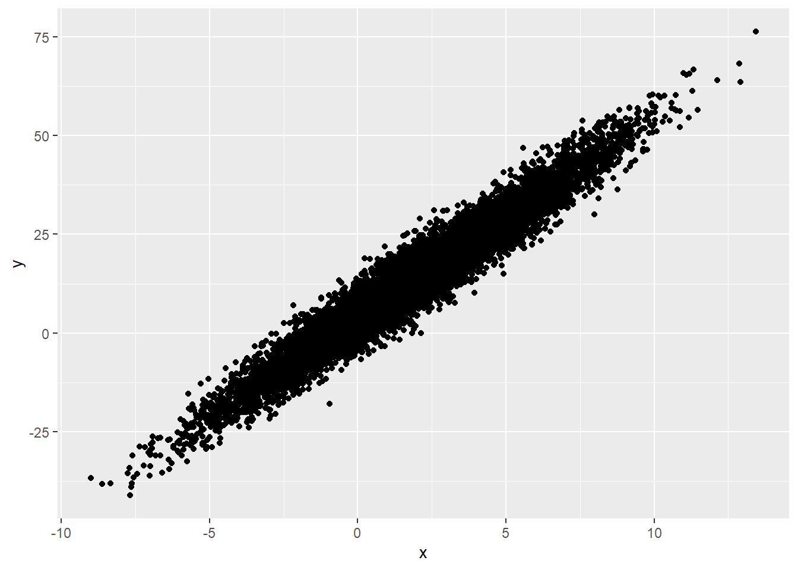

Metodos de Resampleo - ISLR Capitulo 5¶
Los métodos de resampleo son indispensables en la estadística moderna ya que permiten ajustar modelos a diferentes muestras de un mismo set de entrenamiento con el fin de obtener mayor información del modelo. Por ejemplo puede ser de utilidad para ver la variabilidad del modelo en distintas muestras. Los dos métodos que se presentan en el capítulo son cross-validation y bootstrap. A grandes rasgos CV puede servir para estimar el test error de un modelo o para ajustar hiperparámetros del modelo como el nivel de flexbilidad. Por su parte bootstrap puede usarse para medir la precisión de un parámetro estimado mediante un modelo estadístico.
Cross-Validation¶
De los modelos que uno entrena es de sumo interés obtener el "test error" que sería el error promedio al predecir una nueva observación aplicando el modelo estadístico entrenado. Esto puede calcularse si tenemos un set de testeo puntualmente para ello pero no suele ser el caso lamentablemente. En general no se tienen tantos datos como para separar en sets como uno desearía y surgen distintas técnicas para estimar el test error basado solamente en los datos de entrenamiento. Algunas de estas técnicas estiman el test error ajustando el training error por algún factor mientras que otras separan el training set en subsets donde uno hace las veces de test set.
Validation Set¶
Un método muy utilizado es el del set de validación. Básicamente consiste en separar nuestro training set en dos sets, un "nuevo" training set y uno set de validación. Una práctica habitual es separar 70-30, pero va a depender de la cantidad de observaciones que tengan y no hay una regla estricta. Básicamente de los datos que tienen para entrenar el modelo separan una parte que va a ser el set de validación y entrenan el modelo con los datos restantes (70% por ejemplo). Luego se mide la precisión del modelo en el 30% restante (set de validación) que son datos que no fueron utilizados a la hora de ajustar el modelo. Si utilizamos el MSE (mean squared error) cómo medida del error, este va a ser nuestro test error estimado. Recordemos que es el MSE calculado con las predicciones en el set de validación. Por otra parte el set de validación también puede servir para ajustar algún hiperparámetro. Se pueden correr muchos modelos con distintos hiperparámetros y ver cuál tiene menor MSE en el set de validación.
Es un método muy sencillo y suele ser eficaz pero tiene dos potenciales problemas: * El MSE puede variar mucho según cómo dividieron las observaciones en training y validación. Otra segmentación puede dar resultados muy distintos. * No utilizás todos tus datos para ajustar el modelo y puede que eso lleve a sobreestimar el test error, que quizás sería menor si usaras todas las observaciones para entrenar el modelo.
Leave-One-Out Cross-Validation¶
LOOCV es un intento de solucionar los problemas del enfoque del set de validación [SPOILER: No es recomendado pero vale la pena conocerlo].
Este enfoque es llevar el set de validación al extremo. Lo que se hace es de nuevo separar nuestro training set en dos pero esta vez guardando una sola observación como validación y usando las n-1 restantes para entrenar el modelo. La idea es hacer esto n veces, dejando cada vez una observación distinta como validación.
El test error estimado es el promedio de los MSE de cada predicción que se hizo de la observación de validación.
Pensando en los problemas del set de validación, con LOOCV logramos usar casi todos los datos disponibles para entrenar el modelo (n-1 observaciones) por lo tanto deberíamos tener modelos con menos sesgo y no sobreestimar tanto el test error como con el enfoque de set de validación.
Por otra parte con el set de validación podemos obtener resultados muy distintos según el azar de cómo dividamos nuestros datos. En LOOCV esto no pasa ya que todos nuestros modelos de entrenamiento van a ser practicamente iguales salvo por una observación cada vez. No hay azar en la división de training y validación.
Enseguida vemos el mayor problema de este enfoque, que es computacional. Debemos ajustar n modelos y no solo uno. Dependiendo de nuestros datos y la complejidad de nuestro modelo esto puede demandar muchísimo tiempo/recursos.
K-Fold Cross-Validation¶
K-Fold CV es un punto intermedio entre ambos enfoques y es de lo más utilizado al día de hoy. Consiste en separar nuestros datos en K subsets de mismo tamaño. Se selecciona uno de esos K subsets y se lo deja como validación. Se entrena el modelo con los K-1 subsets y se predice en el de validación que separamos. Así K veces, dejando como validación cada vez uno subset distinto. El Test error estimado es el promedio de los MSE en cada caso. Se puede ver fácilmente que si K = n, entonces estaríamos en LOOCV. Los valores típicos de K suelen ser 5 o 10, y por ende es muchísimo menos costoso que LOOCV. Al separar en "solo" 10 subsets cada set de validación puede tener cierta variabilidad en el MSE respecto a otros pero esta va a ser menor que en el enfoque de set de validación. En el libro se muestran unos gráficos para data simulada donde se ve que LOOCV y K-Fold tienen comportamiento muy similar y según el caso pueden sobreestimar o subestimar el verdadero test error (depende el problema y la flexibilidad elegida). Como mencionamos para el set de validación, K-fold también puede ser utilizado para ajustar algún hiperparámetro del modelo como el nivel de fleixibilidad. En este caso lo que nos interesa es encontrar el valor mínimo del MSE entre los distintos posibles valores del hiperparámetro para decidir cual es el mejor posible pero el valor puntual del MSE o su precisión no nos interesa tanto.
Trade-Off entre sesgo y varianza en K-Fold Cross-Validation¶
Otro punto muy importante de K-Fold, además de que requiere menos intensidad computacional que LOOCV, es que suele dar estimaciones más precisas del test error que LOOCV, y esto tiene que ver por el tradeoff entre sesgo y varianza.
Vimos antes que LOOCV debería ser el estimar más insesgado del test error ya que utiliza casi todas las observaciones de entrenamiento cada vez sin embargo hay que ver que sucede con la varianza ya que es otro componente del MSE. (Más detalles en ISLR Cap 2).
Resulta que LOOCV tiene mayor varianza que K-Fold CV siempre que K sea menor que n. Esto sucede porque en LOOCV lo que hacemos es promediar el resultado de n modelos cuyos datos de entrenamiento son casi idénticos (salvo por una observación) y por ende los resultados están en gran medida correlacionados positivamente.
Por otro lado al hacer K-Fold CV se promedian solo K resultados que están menos correlacionados entre sí ya que los datos de entrenamiento se solapan menos entre ellos.
La clave acá es que el promedio de muchos valores altamente correlacionados tiene mayor varianza que el promedio de muchos valores que no están tan correlacionados. Dado este escenario se hicieron pruebas que llegaron a la conclusión empírica de que K=5 y k = 10 son valores que no suelen tener excesivo sesgo ni varianza.
Al parecer en los últimos años se empezó a dudar de la universalidad de este enunciado y se han hecho pruebas donde LOOCV no tiene mayor varianza. Sin embargo sigue siendo computacionalmente más demandante y el beneficio del menor sesgo no era suficiente para darle demasiada importancia.
Cross-Validation en problemas de clasificación.¶
Los procedimientos vistos hasta ahora son útiles tanto para variables continuas como para problemas de clasificación. Vinimos usando ejemplos donde la medida del error era el MSE (variable dependiente continua) pero podemos aplicar todo de la misma manera utilizando alguna medida de clasificación como la cantidad de observaciones mal clasificadas. Todo el resto se mantiene y es válido, tanto sete de validación, como LOOCV o K-Fold.
Bootstrap¶
El bootstrap es una herramienta estadística muy extendida que se utiliza para cuantificar la incertidumbre asociada a algún estimador o método de aprendizaje estadístico. Un ejemplo sencilla sería que se puede usar para estimar los errores estándar de los coeficientes de una regresión lineal. Sin embargo lo poderoso de esta herramienta es que es utilizable en muchísimos métodos de aprendizaje, incluso en algunos donde es difícil estimar la varianza o esta no es calculado por los paquetes estadísticos.
Idealmente para estimar la variabilidad de un estimador lo que uno haría es ajustar un modelo n veces y ver cómo varía el estimador a lo largo de esos n modelos utilizando n muestras. Sin embargo no es habitual tener tantos datos ni muestras disponibles. Mismo uno querría utilizar todos los datos en simultáneo posiblemente para reducir el sesgo. Acá es donde bootstrap se luce ya que permite emular el proceso de obtener nuevas muestras de datos a partir de nuestros datos de entrenamiento. En vez de muestrear de manera independiente sobre la población lo que se hace es muestrear n veces con reposición de nuestro set de entrenamiento, generado n muestras a partir de nuestros datos originales.
Ya con nuestras nuevas muestras (provenientes todas del dataset original) podemos calcular n modelos y por ende n veces el mismo estimador, pudiendo estimar el desvío estándar de este.
En el fondo lo que se hace es suponer que nuestra muestra es representativa de la población y es nuestra mejor aproximación. Luego obtenemos muestras de estos datos que son nuestra versión reducida de la población. Posiblemente haya algún sesgo pero es una herramienta bastante útil para estimar la variabilidad de nuestros estimadores.
Generamos un ejemplo para ver cómo funciona.
Empezamos generado una población de y que depende x con intercepto 5 y b1 = 5.
library(ggplot2)
set.seed(1)
x <-rnorm(10000, mean = 2, sd = 3)
y <- 4 + 5*x + rnorm(10000,0,4)
df <- cbind.data.frame(y,x)
ggplot(data = df, aes( x =x, y =y )) +
geom_point()

Primero vemos el caso ideal que sería poder obtener muchas muestras de la población y ajustar modelos a estas. Luego veremos como varían nuestros coeficientes.
# Muestras de la población
results_pop <- data.frame(b0 = double(), b1 = double())
set.seed(123)
for (i in 1:1000){
df_train <- df[sample(nrow(df),size = 500,replace = FALSE),]
ml_train <- lm(formula = y ~ x, data = df_train)
results_pop[i,1] = ml_train$coefficients[[1]]
results_pop[i,2] = ml_train$coefficients[[2]]
}
summary(results_pop)
## b0 b1
## Min. :3.198 Min. :4.804
## 1st Qu.:3.834 1st Qu.:4.969
## Median :3.974 Median :5.005
## Mean :3.975 Mean :5.004
## 3rd Qu.:4.115 3rd Qu.:5.043
## Max. :4.615 Max. :5.169
ggplot(data = results_pop) +
geom_histogram( aes( x = b0), fill = "white", colour = "black") +
geom_vline( aes(xintercept = mean(b0)), colour = "red", size = 1)

Vemos que estimando 1000 modelos a partir de 500 observaciones independientes de la población original obtenemos para b0 estimaciones centradas aproximadamente en el valor real (3.975) pero con un mínimo encontrado en 3.198 y un máximo en 4.615. El desvío estándar de la estimación es de 0.2078. A su vez mostramos un histograma de cómo se distribuye la estimación de b0.
Ahora simulemos un caso real donde solo tenemos una muestra de 500 observaciones y es todo con lo que podemos trabajar. Como primera medida estimamos una regresión lineal y vemos qué parámetros ajustan mejor nuestros datos.
# Muestras de la población
results_sample <- data.frame(b0 = double(), b1 = double())
set.seed(456)
df_train_sample <- df[sample(nrow(df),size = 500,replace = FALSE),]
ml_train_sample <- lm(formula = y ~ x, data = df_train_sample)
results_sample[1,1] <- ml_train_sample$coefficients[[1]]
results_sample[1,2] <- ml_train_sample$coefficients[[2]]
knitr::kable(results_sample, caption = "Coefficients")
Table: Coefficients
| b0 | b1 |
|---|---|
| 3.89621 | 5.025914 |
Vemos que a partir de entrenar el modelo con las 500 observaciones obtenemos un intercepto de 3.896 y un b1 estimado de 5.026.
Nosotros, como conocemos la población, sabemos que el intercepto no es del todo preciso ya que el real es 4 sin embargo en un caso real eso no lo sabríamos. Nos interesaría saber qué variabilidad tiene ese coeficiente para tener una medida de qué tan variable es nuestro resultado.
Para una regresión lineal eso se puede saber ya que no es difícil calcular la varianza de los estimadores, pero con modelos más complicados no siempre se puede y ahí es donde bootstrap ayuda realmente. Acá lo hacemos con la regresión lineal porque es lo más sencillo de mostrar.
Suponiendo que queremos obtener una estimaación de la variabilidad del coeficiente estimado b0 procedemos con bootstrap.
Fijense que lo que hacemos es distinto al primer caso. Acá tomamos 10000 muestras no de la población sino de nuestro set de 500 observaciones. Estas muestras son también de 500 observaciones, la diferencia es que es con reposición por lo tanto una misma observación puede figurar más de una vez.
# Muestras de la población
results_bootstrap <- data.frame(b0 = double(), b1 = double())
set.seed(789)
for (i in 1:10000){
df_train_bs <- df[sample(nrow(df_train_sample),size = 500,replace = TRUE),]
ml_train_bs <- lm(formula = y ~ x, data = df_train_bs)
results_bootstrap[i,1] = ml_train_bs$coefficients[[1]]
results_bootstrap[i,2] = ml_train_bs$coefficients[[2]]
}
summary(results_bootstrap)
## b0 b1
## Min. :3.245 Min. :4.791
## 1st Qu.:3.822 1st Qu.:4.982
## Median :3.962 Median :5.020
## Mean :3.962 Mean :5.019
## 3rd Qu.:4.100 3rd Qu.:5.057
## Max. :4.709 Max. :5.205
print(paste0("El desvío estándar de b0 a partir de 10000 modelos es ", sd(x = results_bootstrap$b0)))
ggplot(data = results_bootstrap) +
geom_histogram( aes( x = b0),fill = "white", colour = "black") +
geom_vline( aes(xintercept = mean(b0)), colour = "blue", size = 1)

Voilà. Corrimos 10000 iteraciones de nuestro modelo a partir de 10000 muestras de nuestra data original. El desvío estándar de b0 para bootstrap quedó de 0.2071. Que si comparamos con el de 1000 muestras independientes que era 0.2078 es prácticamente igual. A su vez, podemos calcular el desvío teórico de b0 a partir del modelo (la solución fácil).
##
## Call:
## lm(formula = y ~ x, data = df_train_sample)
##
## Residuals:
## Min 1Q Median 3Q Max
## -13.2193 -2.8265 0.0281 2.7421 10.7577
##
## Coefficients:
## Estimate Std. Error t value Pr(>|t|)
## (Intercept) 3.89621 0.21607 18.03 <2e-16 ***
## x 5.02591 0.05902 85.16 <2e-16 ***
## ---
## Signif. codes: 0 '***' 0.001 '**' 0.01 '*' 0.05 '.' 0.1 ' ' 1
##
## Residual standard error: 3.98 on 498 degrees of freedom
## Multiple R-squared: 0.9357, Adjusted R-squared: 0.9356
## F-statistic: 7252 on 1 and 498 DF, p-value: < 2.2e-16
Vemos que desde R el modelo nos devuelve que b0 tiene un desvío de 0.21607. Prácticamente igual al desvío de las muestras independientes como al de bootstrap. Por otra parte vemos que el promedio de b0 estimado en bootstrap es mucho más cercano a 4 que el estimado con una sola iteración y quedó mucho más cerca que el promedio de los estimados mediante muestras independientes. Nada mal no?